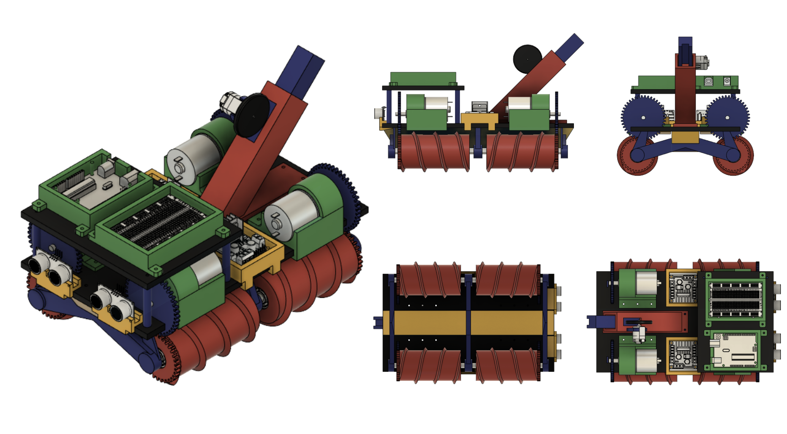

Overview
I served as CAD Design Lead and Data Analyst on a multidisciplinary engineering team tasked with developing an Over-Terrain Vehicle (OTV). As Design Lead, I produced detailed 3D models and functional prototypes using a blend of CAD software, 3D printing, and hands-on fabrication. My contributions were central to the vehicle’s mechanical design, including the development of a custom corkscrew roller system that required careful consideration of gear ratios, material tolerances, and drivetrain integration. This design element played a key role in our nomination for the Most Innovative Design engineering award.
In parallel, I worked as the team’s Data Analyst, collecting and interpreting performance metrics throughout the build and testing phases. I visualized results through graphs, charts, and comparative datasets, enabling the team to evaluate efficiency, iterate effectively, and validate mechanical decisions. Through this dual role, I bridged technical design and empirical assessment, supporting both creative engineering and evidence-driven refinement.


Click image to view gallery